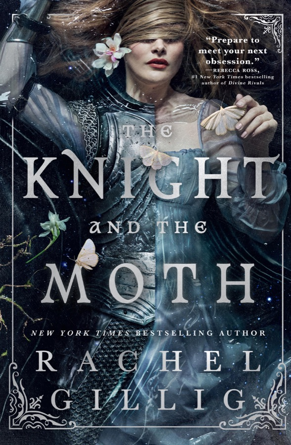
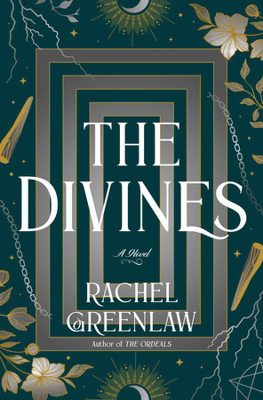
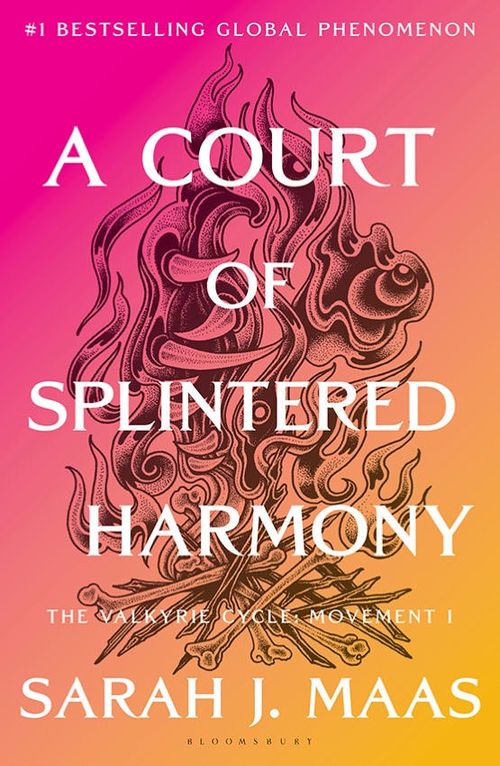

Rites of the Starling
The kingdoms are cracking, monsters are coming, and Odessa finally stops running from the crown.
- Spice
- 4 / 5
- Series
- Book 2
Updated
These are the five 2026 romantasy books we keep coming back to. There’s no ranking here—the best choice depends on what you want tonight.
Choose from the five ↓Start with your mood
Pick the mood that sounds good right now. You can overthink the rest after chapter one.
The kingdoms are cracking, monsters are coming, and Odessa finally stops running from the crown.
Raeve and Kaan get more danger, more answers, and absolutely no easy way through either.
Maggie knows exactly how this fantasy story ends. Being trapped inside it gives her a chance to ruin the plot.
Fae, enemies, and enough waiting to make every small romantic moment land harder.
Aris enters a deadly contest for one reason: to get close enough to the gods to kill them.
Also worth a look
Not quite your book? Try one of these before you give up on the 2026 pile.
 For vampires and bad decisionsThe Lion and the Deathless DarkCarissa Broadbent
For vampires and bad decisionsThe Lion and the Deathless DarkCarissa Broadbent
 For a hard-earned foreverArchangel’s EternityNalini Singh
For a hard-earned foreverArchangel’s EternityNalini Singh
 For dragons with historyClutch and ClawLindsay Buroker
For dragons with historyClutch and ClawLindsay Buroker
 For dragons and fresh startsAshwalkerS.M. Gaither
For dragons and fresh startsAshwalkerS.M. Gaither
 For pirates and feminine rageA Flame Among the SeasEmilia Jae
For pirates and feminine rageA Flame Among the SeasEmilia Jae
 For queer moonlit yearningChosen of the MoonLynn Kerrigan
For queer moonlit yearningChosen of the MoonLynn Kerrigan
Most anticipated
Four release dates circled on our calendar. Plans change, so we check these against the publishers before updating the page.

Rachel Gillig returns to ruined cathedrals, cruel kings, and one mysterious knave.
See the publisher details ↗
Penn Cole closes the Kindred’s Curse Saga with 880 pages of unfinished business.
See the publisher details ↗
Rachel Greenlaw brings dangerous magic, old grief, and steamy romance back to the academy.
See the publisher details ↗
Sarah J. Maas is finally taking readers back to Prythian. Yes, this is the one everyone will be talking about.
See the official announcement ↗Release dates can move. Last checked August 20, 2026.
How we chose
We don’t have a secret formula for naming the best romantasy books of 2026. We start with books in our catalogue, pay attention to what readers actually enjoy, and make sure the list isn’t six versions of the same story. It’ll change as new books land.
Browse every book →